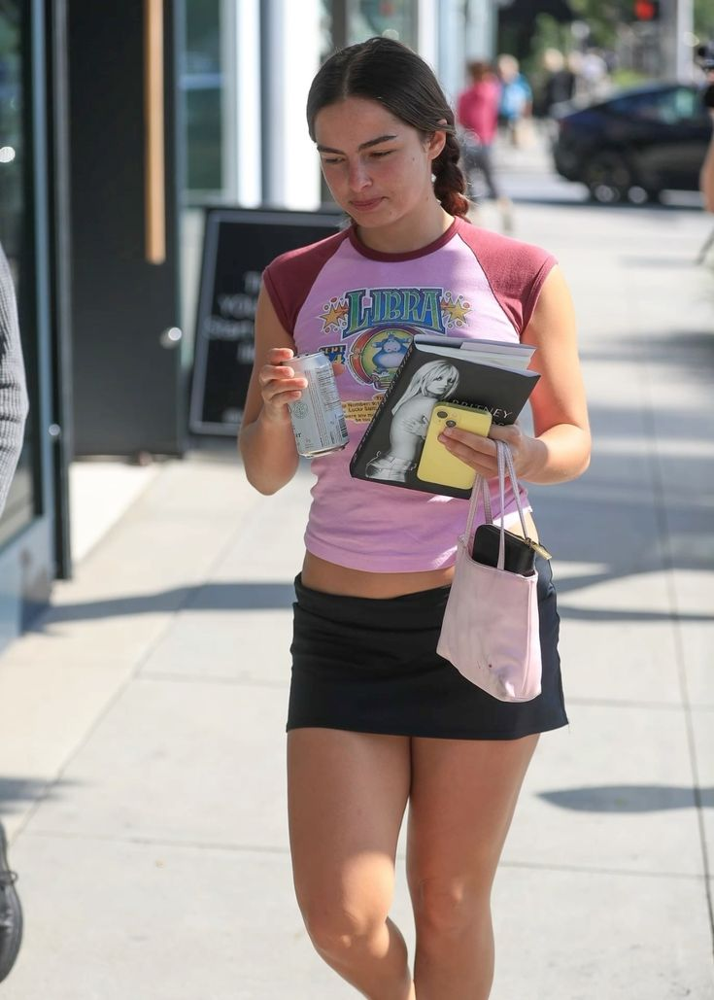
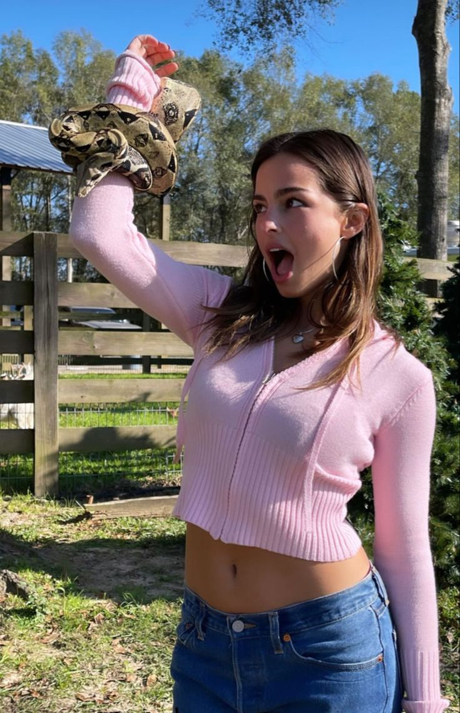
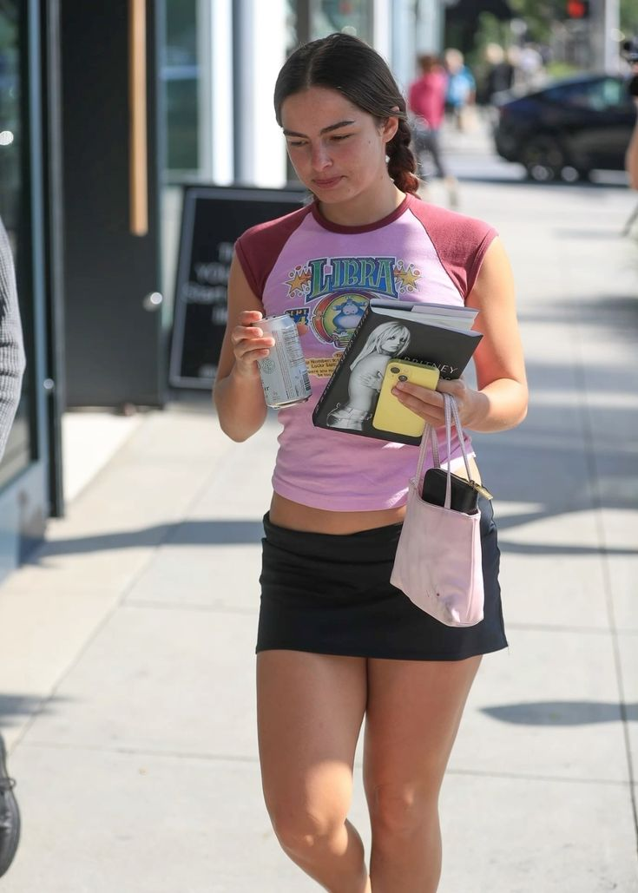
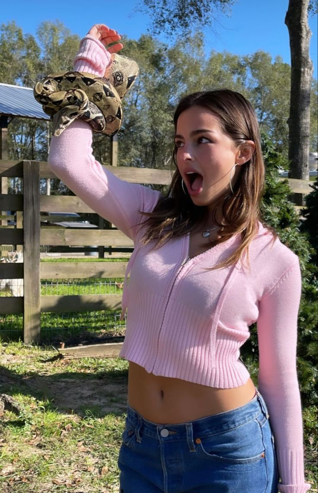
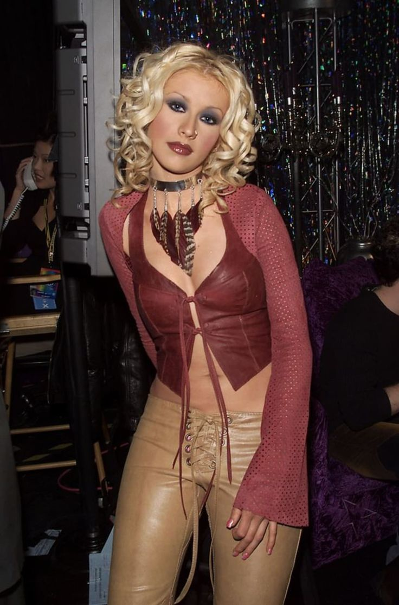
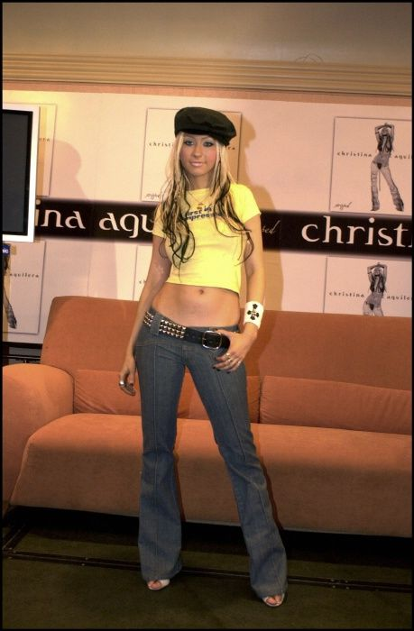
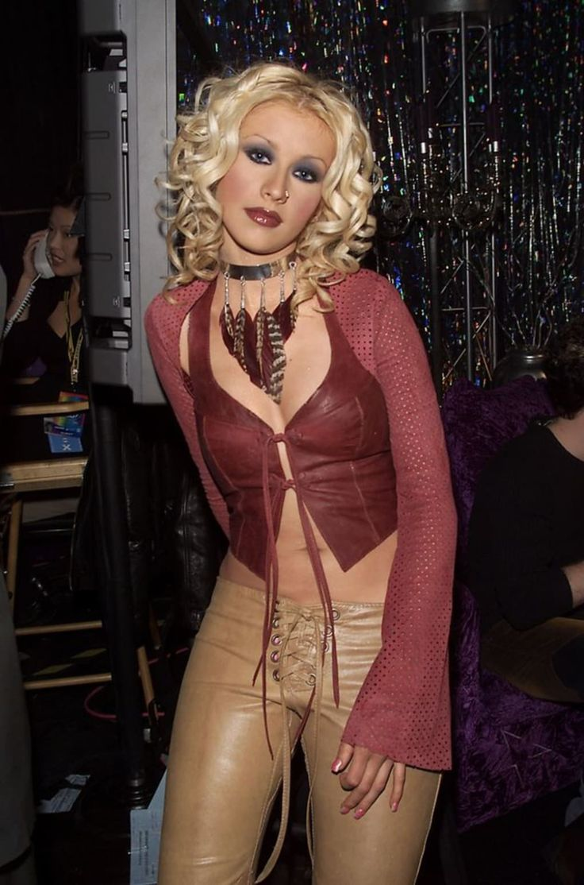
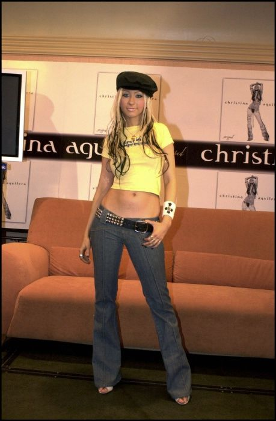

Now
 



Addison Rae
Addison Rae has embraced the Y2K fashion revival, incorporating iconic elements from the early 2000s into her style, which resonates strongly with her fanbase and wider audiences. Known for her influence on social media, particularly TikTok, Rae has been pivotal in reintroducing Y2K aesthetics to a new generation.
Her style includes key Y2K elements such as crop tops, low-rise jeans, and vibrant, playful accessories reminiscent of the era. Rae's approach often incorporates bright colors, like hot pink and baby blue, which were staples of early 2000s fashion. She has been seen sporting outfits that include baggy cargo pants, graphic tees, and accessories that nod to the pop culture and tech influences of Y2K—such as photobooth-style selfies and playful, nostalgic edits on her social media posts. Moreover, Rae's public appearances and social media visuals often pay homage to the "Barbie" aesthetic, another cornerstone of Y2K fashion, characterized by its emphasis on pink hues and a blend of girlish charm and bold, statement-making pieces. This has been described as her "Barbiecore era," where she uses fashion and makeup to create a modern interpretation of Y2K's maximalist, playful trends (Meaww) (Highsnobiety)

Devon Lee Carlson
Devon Lee Carlson has made a significant mark on Y2K fashion through her collaboration with Marc Jacobs, channeling her unique style into a collection that revisits and revitalizes early 2000s fashion elements. Known for her role as a digital "It girl," Carlson's collaboration includes a variety of playful and nostalgic pieces that blend modern aesthetics with Y2K themes. This includes everything from baby tees and shrunken shorts to graphic sweatshirts, all adorned with vibrant colors and retro designs such as cartoon images and pop-art inspired graphics.
Carlson’s collection is notable for its creative accessories, like the charming shoulder bags available in black and hot pink, which can be transformed into necklaces, showing her penchant for functional yet fashionable design. Her personal touch is evident throughout the collection, with some pieces even featuring her dog, Martin, adding a personal narrative to her designs. This partnership not only showcases Carlson's personal style but also her ability to influence contemporary fashion with Y2K nostalgia, making old trends appealing to a new generation. Her work with Marc Jacobs has been highlighted as a perfect match, combining her vibrant and unapologetic style with the iconic brand's playful and colorful aesthetic (Grazia) (CollegeFashionista.com) (L'Officiel USA) (Global Fashion Report) (RUSSH) (CR Fashion Book).

Aliyah's Interlude
Aliyah Bah, known as Aliyah's Interlude, has emerged as a significant influencer and style icon, particularly renowned for her unique contribution to Y2K fashion through her personal aesthetic known as "Aliyahcore." This style blends elements of Y2K, Harajuku, and streetwear, showcasing her creativity and individuality. Aliyah's Interlude has utilized platforms like TikTok to share her fashion insights and designs, resonating with a wide audience and inspiring a new generation to embrace a refreshed Y2K vibe.
Her fashion influence extends beyond merely setting trends, as she actively engages with cultural and social discussions within the fashion industry. Aliyah's Interlude is recognized for addressing and challenging the lack of representation and diversity in fashion, advocating for broader acceptance and visibility of diverse beauty and style standards. She has also expressed a commitment to transforming "Aliyahcore" into an inclusive brand, highlighting her entrepreneurial spirit and dedication to making a lasting impact in the fashion world. Aliyah's engagement with her followers and her outspoken personality have allowed her to create a significant following, where she not only promotes her style but also encourages discussions around the authenticity and cultural significance of fashion trends (Wikipedia) (PAPER Magazine) (The Shade Room) (Passionfruit).
Then
Britney Spears
Britney Spears emerged as a pop icon in the late 1990s and early 2000s, and her fashion choices quickly became a blueprint for Y2K teen fashion. Her style was a mix of schoolgirl innocence and pop star glamour, heavily influencing the trends of the era. The most iconic look, the schoolgirl outfit from her “…Baby One More Time” music video, featured a pleated skirt, knee-high socks, and a tied-up white blouse, encapsulating the blend of sweet and sassy. Beyond this, Britney often embraced crop tops, low-rise jeans, and tracksuits, all staples of Y2K fashion. Her stage costumes often included glitter, crystals, and statement accessories, adding to her influence as a fashion trendsetter (Wikipedia).

Paris Hilton
Paris Hilton epitomized the Y2K aesthetic with her glamorous and extravagant fashion choices that seemed to scream luxury and excess. Known for her love of pink, rhinestones, and anything that sparkled, Paris popularized many trends of the early 2000s. She was often seen in velour Juicy Couture tracksuits, which became synonymous with casual luxury. Her public appearances frequently featured mini skirts, low-rise jeans, tank tops, and the iconic oversized sunglasses. Paris also embraced the "it girl" accessories of the era, like designer handbags (especially from brands like Louis Vuitton and Chanel), chunky jewelry, and flashy watches. Her fashion sense was not just about clothing; it was about portraying a lifestyle of affluence and youth.(Wikipedia)
 



Christina Aguilera
Christina Aguilera's fashion evolution in the Y2K era was marked by a transition from teen pop star to a more edgy and provocative style, especially after her album "Stripped" in 2002. Early on, she favored body-hugging dresses, crop tops, and flared pants, typical of the late 90s. However, her style became more daring with more skin-revealing outfits, bold makeup looks featuring heavy lip liner and smoky eyes, and an array of colorful, often platinum blonde hairstyles that became her signature. Christina’s use of accessories like bandanas, oversized belts, and statement jewelry also influenced Y2K fashion, encouraging a mix of urban and glamorous elements in everyday wear.(Wikipedia)